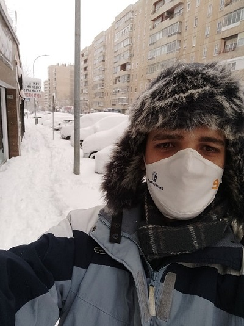

Después de un año tan caótico como 2020, nadie se podía imaginar como iba a empezar 2021. Con un temporal no visto desde hacía casi 1 siglo.
Después de un año tan caótico como 2020, nadie se podía imaginar como iba a empezar 2021. Con un temporal no visto desde hacía casi 1 siglo.
Yo no veía nieve casi desde hacía 10 años y lo máximo que había visto nevar en Guadalajara era una noche y parte del día para que en 2 días despareciera toda la nieve. Con eso se podía disfrutar 1 día de nieve. El año que estuve en Canarias en 2018 hubo una gran nevada pero fue más en Castilla y León donde se tuvo que cortar la autopista AP6 por primera vez. Eso en esa zona es lo más que ha estado cerca de nevar de esta manera. Todo indicaba que iba a suceder como se puede ver en la siguiente imagen del satélite meteosat.
En la imagen se puede ver como la borrasca Filomena entra desde el sudoeste pasando muy cerca por el norte de canarias y es empujada por dos anticiclones desde el oeste y el sur, entrando en España por el sudoeste. Al entrar se encuentra con otros dos anticiclones que la frenan en seco. Uno con epicentro en Argelia, y otro en Europa central, así como el más fuerte que esta en el Atlántico. Esta conjunción de altas presiones con la borrasca hace que se quede parada y al haber temperaturas bajo cero por la época del año ha hecho que se haya desecho ocasionando una tormenta de nieve.
A continuación muestro el mapa de temperaturas y el de espesor de nieve.
Aquí el mapa de temperaturas en más detalle.
Al estar arrinconada no se ha desplazado y es ese el motivo principal de semejante fenómeno. Además en plena península por que el epicentro al principio era Albacete y en un día apenas se desplazo 400 km hacia al norte para situarse justamente en Guadalajara. En la siguiente imagen se puede apreciar las zonas más afectadas y como Guadalajara el oeste de Madrid y el norte de Cuenca han sido las zonas más afectadas por la tormenta, ya que en ellas ha estado presente casi los 3 días siendo el segundo día, desde el final del viernes hasta la mañana del Domingo cuando más ha influido.
 Una vez presentadas las imágenes de meteorología y los mapas pasare a mostrar como se ha vivido este fenómeno en Guadalajara, mi ciudad.
En estas dos imágenes podemos observar como subió la nieve la noche del viernes.
Una vez presentadas las imágenes de meteorología y los mapas pasare a mostrar como se ha vivido este fenómeno en Guadalajara, mi ciudad.
En estas dos imágenes podemos observar como subió la nieve la noche del viernes.
Después de salir se puede ver como media ciudad salio a disfrutar de la nieve ya con los niños con trineos improvisados o ataviados con bastones para la nieve. En Guadalajara no somos tan modernos como Madrid para salir a esquiar pero se podía haber montado una pista de esquí perfectamente. Se puede ver como los servicios de la ciudad estaban disponibles y trabajando ya a primera hora. La gestión de filomena fue bastante buena en Guadalajara, aunque me parece que los costes por parte del ayuntamiento fueron algo altos. Aún así muchos trabajadores no estaban lo suficiente capacitados y la nevada se alargo necesitando la colaboración de los militares.

Mi recorrido alrededor de mi casa y como quedo el parque de la amistad, con un cuarto del arbolado dañado y muchos árboles que no pudieron soportar el peso de la nieve y que posteriormente fueron cortados.
Aquí muestro los principales monumentos y bienes de interés tras la nevada, el domingo. Empezando por San Gines, bajando por la carrera ya encontraremos el fuerte de San Francisco, Bejanque y la concatedral de Santa María más abajo. Terminando por el ayuntamiento y el palacio del Infantado.
Más vistas del infantado. Avenida del Ejercito, jardines del infantado, torreón del Alvarfañez y vista del palacio multiusos y centro acuático. Estas últimas construcciones recientes de la ciudad.
En estas fotos muestro la exposición temporal de replicas de cuadros del museo del Prado. Esta exposición se encontraba en el parque de la Concordia de la ciudad de Guadalajara, en el mes de enero de 2021, justo al principio de la nevada, y en ella se podían contemplar las piezas más importantes.
La nevada fue tan pronunciada que incluso pasada una semana además del ejercito tuvieron que venir camiones para llevarse la nieve de las calles.© 2016 - All Rights Reserved - Diseñada por Sergio López Martínez
El sitio se mantiene gracias a la publicidad, por favor Desactiva Adblock para seguir navegando
He desactivado Adblock![[Valid RSS]](https://www.onepointsync.com/wp-content/uploads/2016/08/valid-rss-rogers.png "Validate my RSS feed")